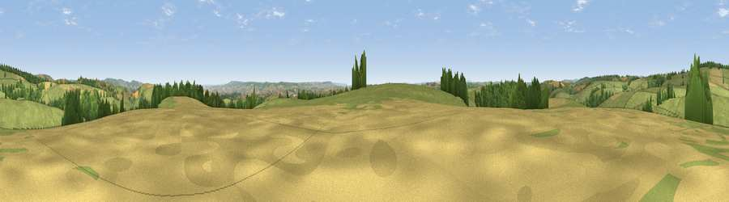

Viewpoint near Clayhanger
#14549 in England · top 30% of its area beats it · near ClayhangerWhere it is
The exact computed spot (ST 03925 25875). Click the marker for map links.
The view, rendered

A 360° render of this exact spot computed from the terrain model, tree cover and land cover — summer colours, afternoon light, calibrated against photographs of famous viewpoints. Real trees, hedges and buildings will differ in detail.
The panorama
Grey silhouette: terrain skyline in each direction (720 bearings, Earth curvature and refraction included). Dashed green: skyline with trees (+15 m) and buildings (+8 m) as obstacles. Blue strip: how far the ground is visible on each bearing.
Where the view opens
Wedge length = distance to the farthest visible ground on that bearing (vegetation-aware). Rings at 10, 25 and 50 km.
What fills the view
74% grassland · 14% woodland · 11% cropland
Angular shares of the visible panorama (visual magnitude), not map area. Landscape diversity 0.33 (0–1 Shannon).
Key numbers
More beautiful places nearby
The staircase of upgrades: each row has a higher view potential than everything closer. Driving times are estimates from straight-line distance, calibrated against real road routing — check an actual route before setting out.
| Place | Direction | Drive | Score |
|---|---|---|---|
| Viewpoint near Clayhanger | SSW · 0 km | ~1 min | 64.8 |
| Combe Downs | SSW · 2 km | ~6 min | 65.1 |
| Viewpoint near Wiveliscombe | E · 3 km | ~7 min | 75.1 |
| Viewpoint near Elworthy | NNE · 9 km | ~17 min | 75.6 |
| Viewpoint near Elworthy | NNE · 10 km | ~19 min | 79.2 |
| Viewpoint near Roadwater | NNW · 11 km | ~20 min | 82.9 |
| Viewpoint near Roadwater | N · 11 km | ~21 min | 83.6 |
| Viewpoint near Roadwater | N · 12 km | ~22 min | 84.2 |
51.02419, -3.37126 · source: screening · position refined by local search. Computed location — check access rights before visiting.